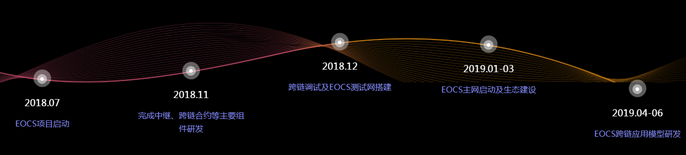
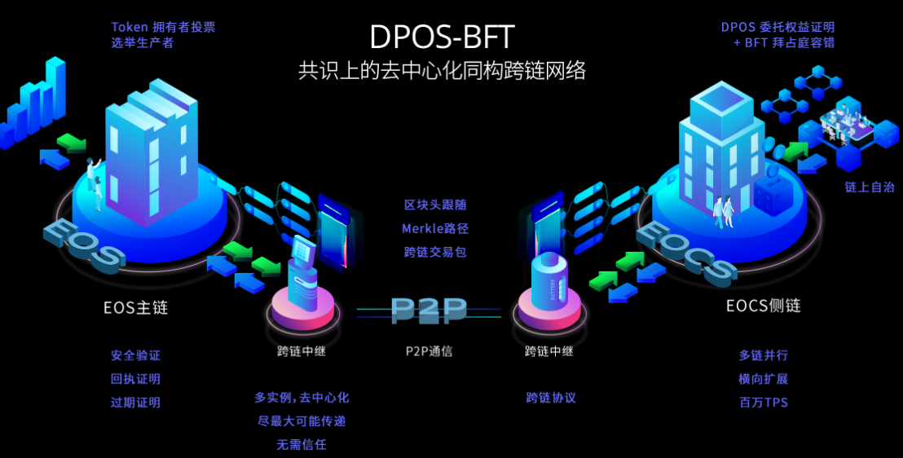
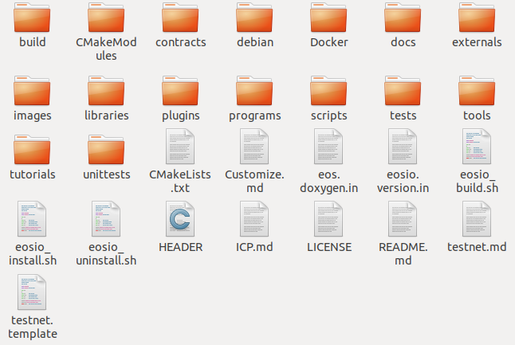

什么是EOCS？
EOCS(Enterprise Operation Cross System),是一个基于eosio底层框架实现的企业级跨链操作系统，旨在实现和EOS主链通信的并行链，是真正意义的跨链，支持高效稳定的跨链交易，为跨链生态建设提供更稳定和安全的平台。作为可与EOS主链交互操作的第一条并行链，EOCS Chain力图实现安全可靠、快捷便利的跨链资产转移、跨链智能合约调用。任何人都可以在EOCS Chain并行链上开发或使用跨链DAPP。
为什么选择EOCS？
互操作性
EOCS Chain并行链允许EOS主链与主流公有链、联盟链、私有链互相通信和价值交换。
可扩展性
通过多链互联互操作，EOCS Chain可帮助EOS实现史无前例的无限扩展。
开发友好性
EOCS Chain延续了EOS软件堆栈的WebAssembly机制，可以非常轻松地开发DAPP。
EOCS发展路径

EOCS核心竞争力
EOCS Chain并行链与EOS主链之间的同构跨链，涉及以下组件：
同构跨链协议（Isomorphic Inter-Chain Protocol, ICP） 同构跨链合约，在并行链和主链上同时部署，支持跨链协议包的解析，证明的验证和存储，以及EOS原生币（EOS）、EOCS Chain原生币（EOCS）、EOS代币的跨链资产转移 同构跨链通道，通过逻辑证明确保通道建立的稳定性和安全性。 中继者，将跨链协议包在并行链和主链之间安全快速地传输
EOCS Chain异构跨链尝试与探索
我们相信未来的区块链不仅在去中心化社区中得到商业落地前景，千万中小企业同样需要区块链作为价值传递的基础服务，未来不仅是公有链、联盟链还是企业内部的私有链，都需要在一个公用网络中进行价值传递和证明。 作为第一条EOS同构并行链，我们将在开发EOCS Chain的基础上，继续探索和研究异构链的跨链协议，不仅要为EOS生态做出支持百万TPS的并行链体系，更要为整个EOS体系连接异构链做出创造性的贡献，作为连接EOS主链及整个EOS跨链群体系与其他区块链链的纽带，为所有异构区块链公链、联盟链、私有链实现安全、快捷、无限扩展的区块链生态体系!
EOCS整体框架简图

如何使用EOCS
编译和部署
EOCS 支持多种Linux操作系统，mac，centos，ubuntu等等，可以去github下载源码并编译，源码下载地址，https://github.com/eocschain/eocs。
在自己的工作目录(可自己设定)执行命令 git clone https://github.com/eocschain/eocs 更新下载源码。下载后文件组织结构如下

在该目录下执行eosio_build.sh,会生成build目录，执行成功会提示build success!!!
填写配置
在~/.local/share/eosio目录下有config和data文件夹，修改config.ini即可。
1 | # Override default WASM runtime (eosio::chain_plugin) |
启动节点
进入build/programs/nodes,执行nodes,启动节点
到此为止，EOCS概述和节点启动简介完毕，下一篇为大家带来EOCS的跨链设计和源码剖析